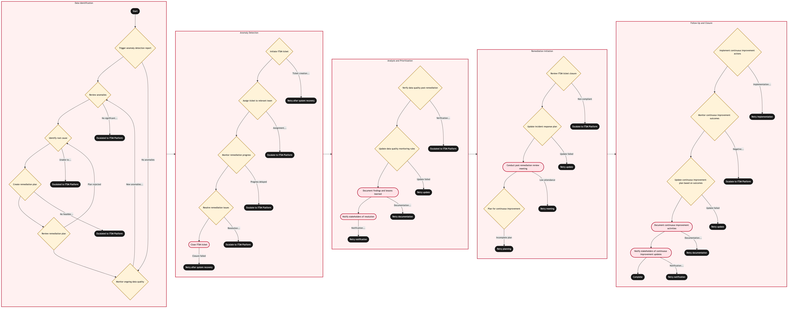

Updated 2026-08-21
Data Quality Monitoring and Remediation
Process flow
Click to zoom

Process steps
▼
Phase 1 — Data Identification
6 steps
| Step | Activity | Role | System | Input | Output | KPI | Dec | Exc | Pain point |
|---|---|---|---|---|---|---|---|---|---|
| 1.1 | Trigger anomaly detection report | Data Engineer | Data Quality Monitoring toolU | Automated daily reports from Data Quality Monitoring tool | Anomalies identified in datasets | 95% accuracy of anomaly detection | Y | N | False positives can lead to unnecessary investigations. |
| 1.2 | Review anomalies | Data Engineer | Databricks LakehouseB | Anomalies identified in step 1.1 | List of prioritized anomalies | 90% relevance of reviewed anomalies | Y | N | Manual review is time-consuming. |
| 1.3 | Identify root cause | Data Engineer | Databricks LakehouseB | Prioritized anomalies from step 1.2 | Root cause analysis report | 85% accuracy of root cause identification | Y | N | Complex datasets can complicate root cause determination. |
| 1.4 | Create remediation plan | Data Engineer | Databricks LakehouseB | Root cause analysis report from step 1.3 | Remediation plan document | 75% completeness of remediation plans | Y | N | Resource constraints can limit available solutions. |
| 1.5 | Review remediation plan | Data Engineer | Databricks LakehouseB | Remediation plan document from step 1.4 | Approved or revised remediation plan | 80% approval rate of plans | Y | N | Technical limitations can delay plan creation. |
| 1.6 | Monitor ongoing data quality | Data Engineer | Databricks LakehouseB | Continuous data monitoring | No new anomalies detected | 98% detection of new anomalies | Y | N | High volume of data can overwhelm systems. |
▼
Phase 2 — Anomaly Detection
5 steps
| Step | Activity | Role | System | Input | Output | KPI | Dec | Exc | Pain point |
|---|---|---|---|---|---|---|---|---|---|
| 2.1 | Initiate ITSM ticket | Data Engineer | ITSM PlatformC | Remediation plan document from step 1.4 | ITSM ticket created for remediation | 90% successful ticket creation | Y | Y | System downtime can affect ITSM operations. |
| 2.2 | Assign ticket to relevant team | ITSM Platform Operator | ITSM PlatformC | ITSM ticket from step 2.1 | Assigned ticket with SLA details | 80% tickets assigned within SLA | Y | N | Resource allocation can be uneven. |
| 2.3 | Monitor remediation progress | Data Engineer | ITSM PlatformC | Assigned ticket with SLA details from step 2.2 | Remediation status updates | 85% timely status updates | Y | N | Manual monitoring is error-prone. |
| 2.4 | Resolve remediation issues | Data Engineer | ITSM PlatformC | Remediation status updates from step 2.3 | Resolved issues and updated ticket | 90% successful issue resolution | Y | N | Complex remediation tasks can be challenging. |
| 2.5 | Close ITSM ticket | ITSM Platform Operator | ITSM PlatformC | Resolved issues and updated ticket from step 2.4 | Closed ITSM ticket | 95% timely closure of tickets | N | Y | System errors can prevent ticket closure. |
▼
Phase 3 — Analysis and Prioritization
4 steps
| Step | Activity | Role | System | Input | Output | KPI | Dec | Exc | Pain point |
|---|---|---|---|---|---|---|---|---|---|
| 3.1 | Verify data quality post-remediation | Data Engineer | Databricks LakehouseB | Closed ITSM ticket from step 2.5 | Verification report of data quality | 98% accuracy of verification | Y | N | Data inconsistencies can persist. |
| 3.2 | Update data quality monitoring rules | Data Engineer | Data Quality Monitoring toolU | Verification report from step 3.1 | Updated monitoring rules | 90% effectiveness of updated rules | Y | N | Rule updates can be complex. |
| 3.3 | Document findings and lessons learned | Data Engineer | Databricks LakehouseB | Verification report from step 3.1 | Documentation of findings and lessons learned | 85% completeness of documentation | N | Y | Insufficient documentation can lead to recurrence. |
| 3.4 | Notify stakeholders of resolution | Data Engineer | ITSM PlatformC | Closed ITSM ticket from step 2.5 | Stakeholder notification | 90% timely notifications | N | Y | Delayed notifications can impact business operations. |
▼
Phase 4 — Remediation Initiation
4 steps
| Step | Activity | Role | System | Input | Output | KPI | Dec | Exc | Pain point |
|---|---|---|---|---|---|---|---|---|---|
| 4.1 | Review ITSM ticket closure | ITSM Platform Operator | ITSM PlatformC | Closed ITSM ticket from step 2.5 | Review of closure process | 80% compliance with closure procedures | Y | N | Procedural non-compliance can lead to issues. |
| 4.2 | Update incident response plan | Data Engineer | ITSM PlatformC | Review of closure process from step 4.1 | Updated incident response plan | 90% effectiveness of updated plans | Y | N | Plan updates can be resource-intensive. |
| 4.3 | Conduct post-remediation review meeting | Data Engineer | ITSM PlatformC | Verification report from step 3.1 and updated incident response plan from step 4.2 | Meeting minutes summarizing findings and actions | 85% attendance of key stakeholders | N | Y | Low stakeholder engagement can hinder improvements. |
| 4.4 | Plan for continuous improvement | Data Engineer | ITSM PlatformC | Meeting minutes from step 4.3 | Continuous improvement plan | 90% inclusion of actionable items | Y | N | Actionable items may not be fully addressed. |
▼
Phase 5 — Follow-Up and Closure
5 steps
| Step | Activity | Role | System | Input | Output | KPI | Dec | Exc | Pain point |
|---|---|---|---|---|---|---|---|---|---|
| 5.1 | Implement continuous improvement actions | Data Engineer | ITSM PlatformC | Continuous improvement plan from step 4.4 | Implemented actions and monitoring results | 90% successful implementation of actions | Y | N | Implementation can be delayed due to dependencies. |
| 5.2 | Monitor continuous improvement outcomes | Data Engineer | ITSM PlatformC | Implemented actions and monitoring results from step 5.1 | Continuous improvement outcomes report | 80% positive outcomes of implemented actions | Y | N | Monitoring can reveal unexpected issues. |
| 5.3 | Update continuous improvement plan based on outcomes | Data Engineer | ITSM PlatformC | Continuous improvement outcomes report from step 5.2 | Updated continuous improvement plan | 90% relevance of updated plan to outcomes | Y | N | Plan updates can be complex. |
| 5.4 | Document continuous improvement activities | Data Engineer | ITSM PlatformC | Updated continuous improvement plan from step 5.3 | Documentation of continuous improvement activities | 85% completeness of documentation | N | Y | Insufficient documentation can hinder future improvements. |
| 5.5 | Notify stakeholders of continuous improvement updates | Data Engineer | ITSM PlatformC | Updated continuous improvement plan from step 5.3 | Stakeholder notification | 90% timely notifications | N | Y | Delayed notifications can impact business operations. |
Swim lanes
Data Engineer1.1 1.2 1.3 1.4 1.5 1.6 2.1 2.3 2.4 3.1 3.2 3.3 3.4 4.2 4.3 4.4 5.1 5.2 5.3 5.4 5.5
ITSM Platform Operator2.2 2.5 4.1
Systems touched
Data Quality Monitoring toolUDatabricks LakehouseBITSM PlatformC
Key performance indicators
- Anomaly detection accuracy: 95%
- Relevance of reviewed anomalies: 90%
- Remediation plan completeness: 75%
- Approval rate of plans: 80%
- Detection of new anomalies: 98%
Risks and control points
- False positives leading to unnecessary investigations
- Manual review time-consuming and error-prone
- Complex root cause determination
- Resource constraints affecting remediation solutions
- Technical limitations delaying plan creation
Air Canada Process Wiki — process and systems reference compiled from public sources
for IT Application Management and User Support pre-sales discovery.
Built 2026-08-21. Every system carries an evidence tier: tier C is an industry pattern and tier U is an open
question, and neither should be asserted as fact about Air Canada without confirmation in discovery.
Not affiliated with or endorsed by Air Canada. Air Canada, Aeroplan and Altitude are trademarks of Air Canada.